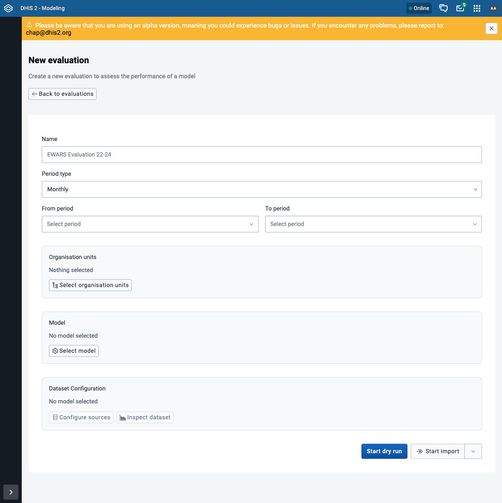
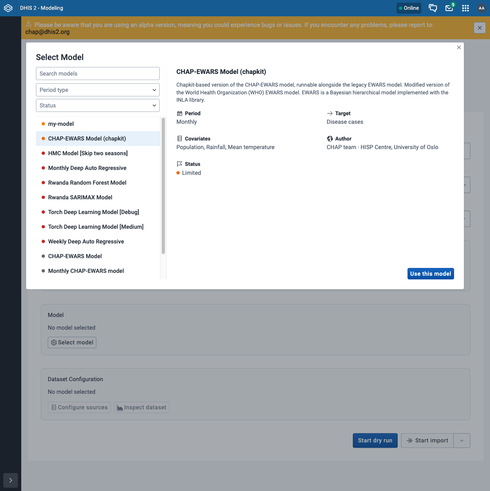
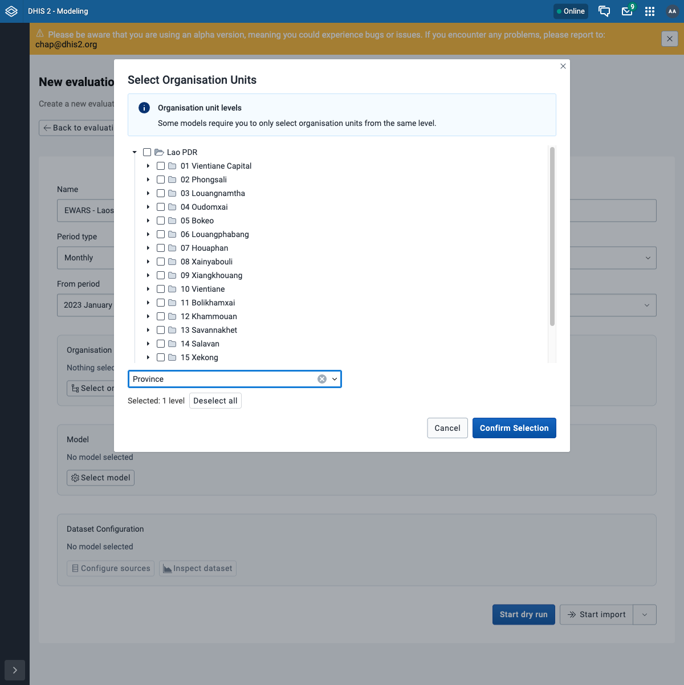
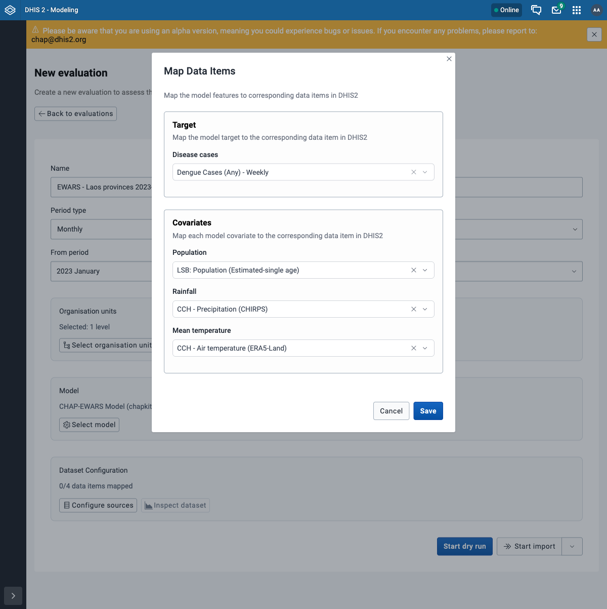
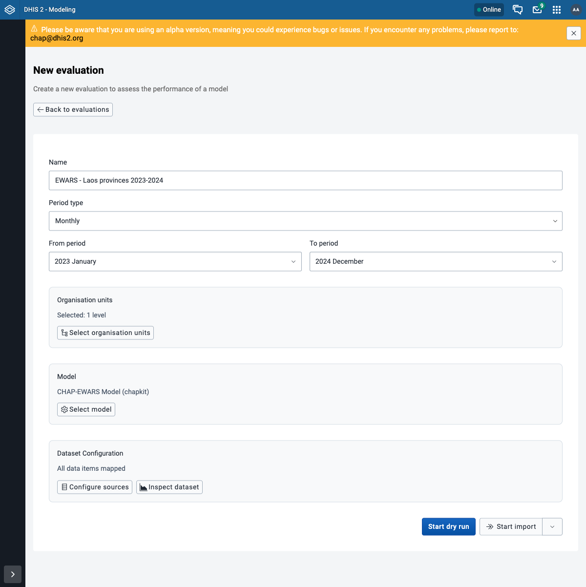
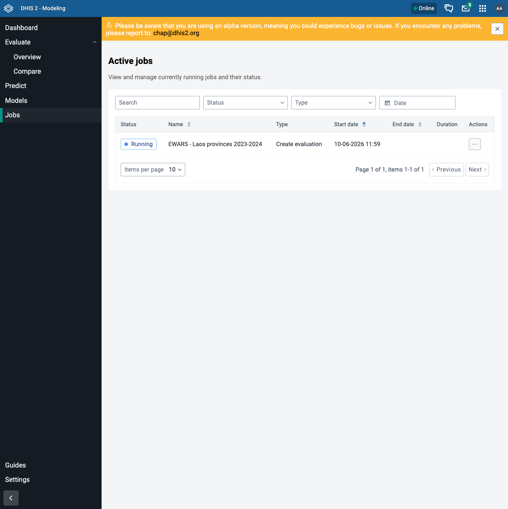
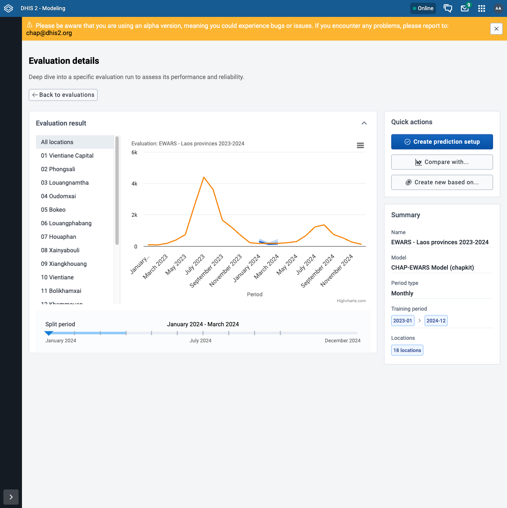
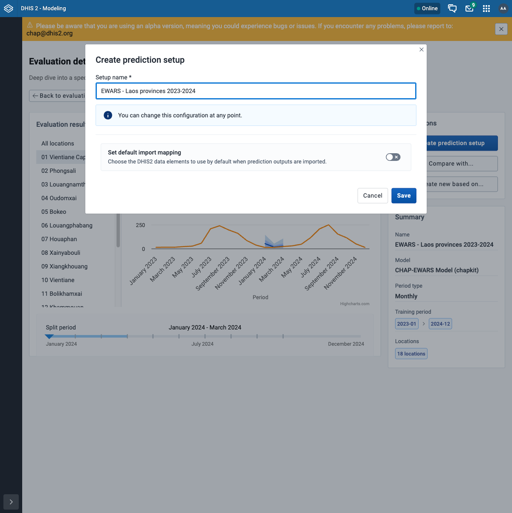
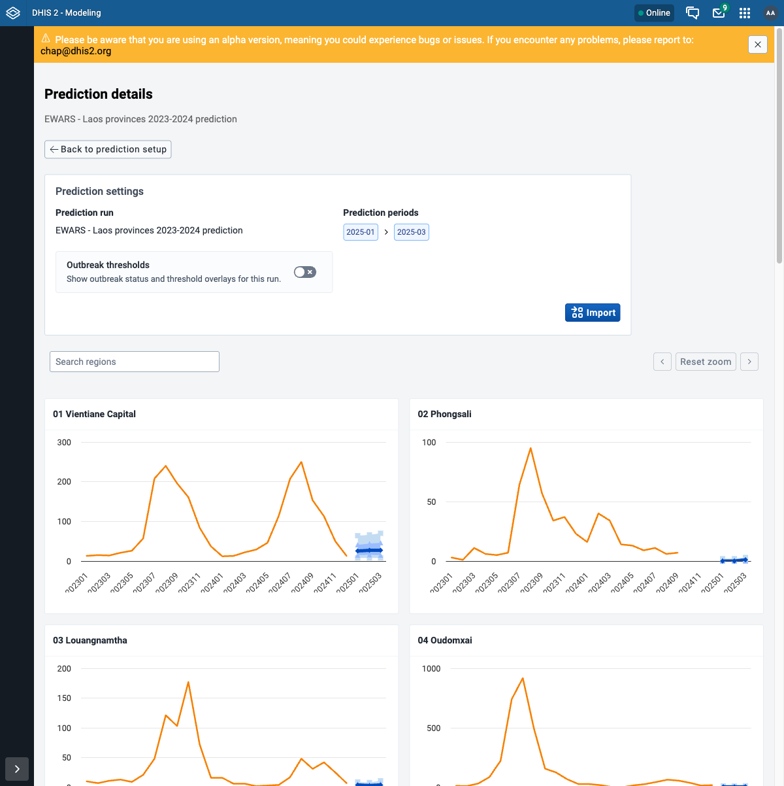

Evaluate and predict in the Modelling App¶
This walks through an evaluation (backtest) and then a prediction in the Modelling App, using the shared configuration. Open the Modeling app from the DHIS2 apps menu to begin.
Before you start
DHIS2 + chap-core are running and connected, and the Modelling App is installed (step 5: install the apps). Keep the shared configuration (step 6) open for the exact model, periods, org units, and data mapping used below.
Part 1 - Evaluate (backtest)¶
An evaluation runs the model over historical periods and compares its predictions to what actually happened.
Step 1 - New evaluation¶
Go to Evaluate -> Overview and click New evaluation. You get a form with all the settings for a run.

Step 2 - Name and period¶
- Name:
EWARS - Laos provinces 2023-2024 - Period type: Monthly
- From period:
2023-01To period:2024-12
Step 3 - Select the model¶
Click Select model, pick CHAP-EWARS Model (chapkit) from the list (the panel on the right shows its target, covariates, and period type), then click Use this model.

Step 4 - Select organisation units¶
Click Select organisation units. In the level dropdown choose Province - this selects all 18 provinces at once - then Confirm Selection.

Step 5 - Map the data¶
The model needs to know which DHIS2 data items feed its features. Click Configure sources and map each one (see the shared configuration for the exact items):
| Model feature | DHIS2 data item |
|---|---|
| Disease cases | Dengue Cases (Any) - Weekly |
| Population | LSB: Population (Estimated-single age) |
| Rainfall | CCH - Precipitation (CHIRPS) |
| Mean temperature | CCH - Air temperature (ERA5-Land) |

Click Save. The form now shows All data items mapped.
Step 6 - Validate, then run¶
Your form should look like this. First click Start dry run - a quick validation of the data and config that stores nothing. When it reports success, click Start import to run the evaluation for real and store the result.

Why dry-run first
Start dry run checks the data mapping and periods without the long model run; Start import runs the evaluation and stores it. Dry-running first catches a mapping or period mistake in seconds instead of after a multi-minute INLA run.
Step 7 - Watch the job¶
You are taken to Jobs, where the run appears as Running. The EWARS model (INLA) takes a couple of minutes over 18 provinces.

Step 8 - View the results¶
When the job finishes, open it from Evaluate. The chart compares the model's predictions to the actual disease cases; use the location list to look at one province at a time, and the Summary panel shows the model, training period, and locations.

Assignment: run an evaluation
- Create the evaluation with the configuration above.
- Start dry run first and confirm it succeeds, then Start import.
- The job reaches SUCCESS on the Jobs page.
- Open the result and confirm the chart shows predictions against actual cases.
Part 2 - Predict¶
A prediction uses the same configuration but forecasts the future instead of scoring the past. In the app this is a two-step pattern: you create a reusable prediction setup from your evaluation, then run forecasts from it.
Step 1 - Create a prediction setup from the evaluation¶
On the evaluation's result page, under Quick actions, click Create prediction setup. A
prediction setup carries over the model, organisation units, periods, and data mapping from your
evaluation, so you do not re-enter any of it. Give it a name (EWARS - Laos provinces 2023-2024)
and click Save. (Leave Set default import mapping off for now - that only pre-selects
where imported forecasts land.)

Step 2 - Run a prediction¶
The setup opens on its own page with no runs yet. Under Quick actions, click Run prediction. The run form is pre-filled from the setup; the one thing you set is the last training period - the cutoff the model trains up to and forecasts after. Choose December 2024 (the end of your data), then click Run prediction. The model forecasts the next 3 months from there.
Step 3 - Watch the job¶
As before, the run shows up under Jobs, here as Make prediction. A prediction is quicker than a backtest - it only forecasts forward.
Step 4 - View the forecast¶
Back on the prediction setup page, the finished run is listed under Completed predictions
with its prediction periods (2025-01 to 2025-03) and training data cutoff
(December 2024). Open it. The Prediction details page shows one chart per province: the
actual history plus the forecast - the median prediction and the 50% / 80% prediction
intervals - for the coming 3 months.

Why three months
The run form does not ask for a forecast length - the horizon defaults to 3 periods
(here 3 months) after the training cutoff, so you inherit it rather than setting it. The API
exposes it as nPeriods if you script a run (through the API).
Importing predictions into DHIS2
The Import button on the prediction run writes the forecast back into DHIS2 (as the CHAP quantile data elements), so it can be shown in dashboards and the Data Visualizer alongside the real data. The setup's Set default import mapping option (Step 1) pre-selects which data elements those go to.
The setup is reusable
Unlike a one-off run, the prediction setup persists: rerun it when new data arrives (each run is kept under Completed predictions), or edit it - all from the setup page, without re-entering the configuration.
Assignment: make a prediction
- Create a prediction setup from your evaluation, then Run prediction with the training cutoff at December 2024.
- The job reaches SUCCESS.
- Open the run and confirm you see a forecast with prediction intervals for the coming months.
Next step¶
Continue to step 7: configure a model. The API walkthrough is a parallel version of this exercise for scripting and automation.